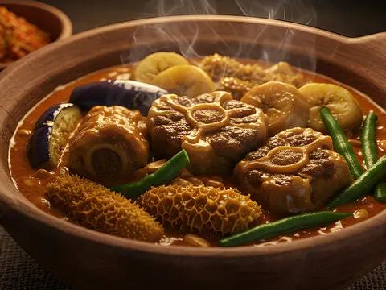
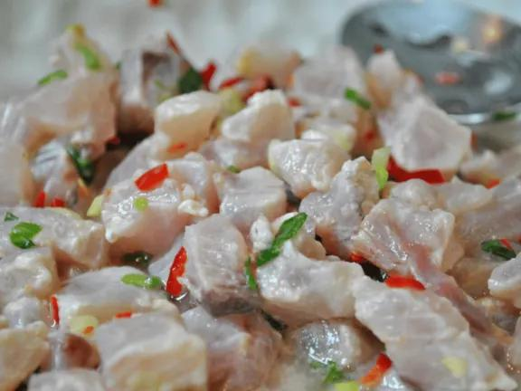
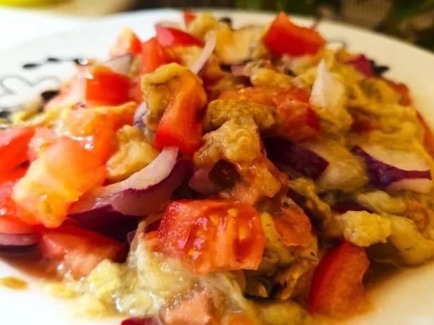
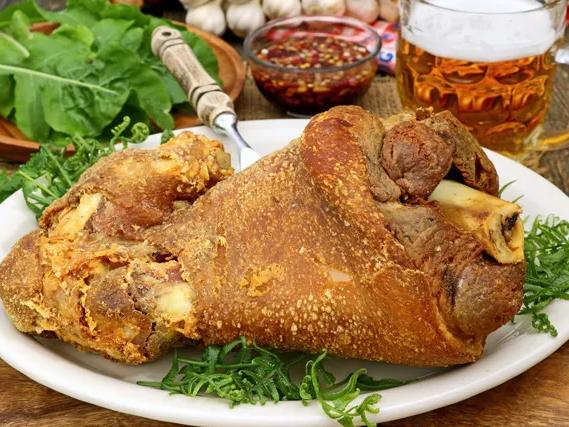
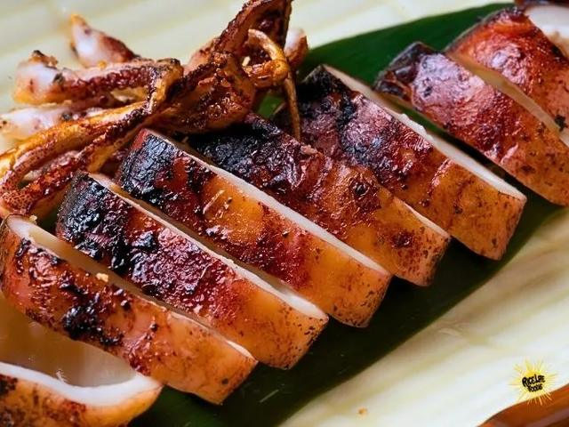

01
Kare-kare
Oxtail and tripe slow-cooked in a roasted peanut sauce, served with house bagoong alamang.
Charcoal-fired · Iloilo City
Heritage recipes from Panay and beyond, reimagined with patience, smoke and the island's finest produce.


Our story
Lakan began with one idea: that the dishes of our grandmothers deserve a white tablecloth. Every plate starts over open charcoal and ends with something familiar, made precise.
Signature plates

Oxtail and tripe slow-cooked in a roasted peanut sauce, served with house bagoong alamang.

Pork knuckle braised until tender, then fried until the skin shatters. Built for sharing.

Whole squid stuffed with tomato and onion, grilled over charcoal and finished with sinamak.
Chef's tasting
A guided evening through the islands, paced over about three hours. Menus change with the catch and the harvest.
₱3,200 per guest
Sommelier pairing available for ₱1,800
Book the tastingReservations